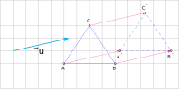

Points et droites
Définition : Point
Un point est un objet fondamental de la géométrie. Il n'a ni longueur, ni largeur, ni épaisseur : c'est une position dans l’espace.
On le représente par une lettre majuscule, par exemple \( A \), et graphiquement par un petit repère ou un marqueur sur une figure.
Définition : Doites, demi-droites et segments
Une droite est un alignement infini de points.
Une demi-droite est une portion de droite qui a un point d'origine et qui est illimitée dans une seule direction.
Un segment est une portion de droite délimitée par deux points.

Une demi-droite est une portion de droite qui a un point d'origine et qui est illimitée dans une seule direction.
Un segment est une portion de droite délimitée par deux points.
Axiome
Par deux points distincts passe une et une seule droite
Définition
Deux droites \(d\) et \(d'\) sont dites parallèles si elles sont confondues ou ne s'interceptent pas.
Axiome
Par deux points distincts passe une et une seule droite